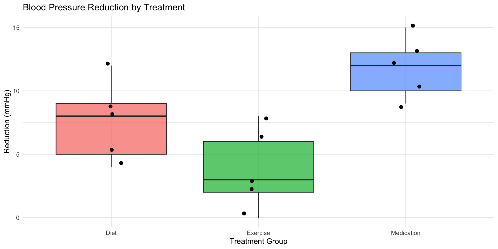
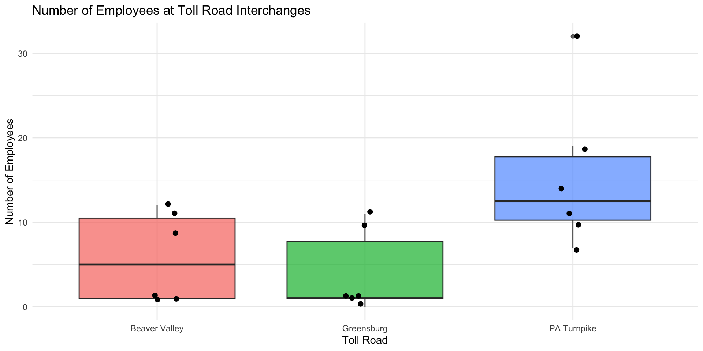
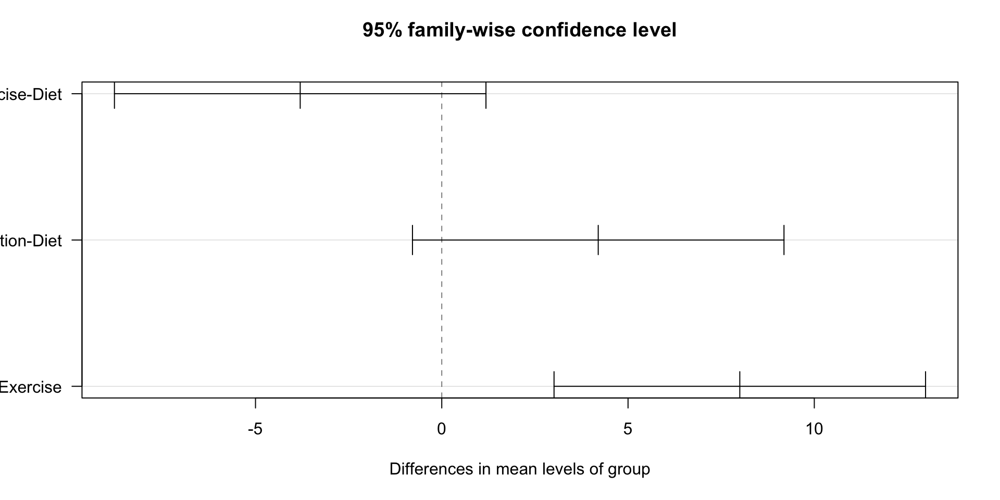
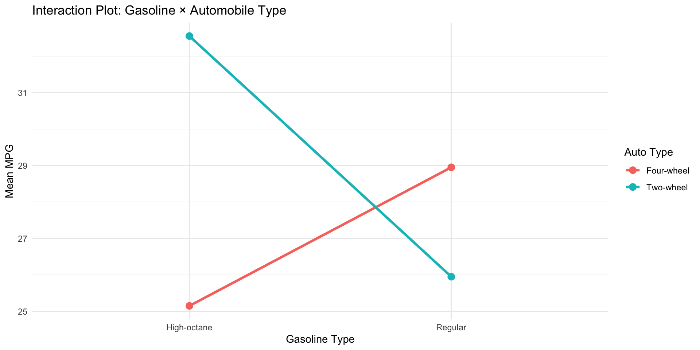

Df Sum Sq Mean Sq F value Pr(>F)
group 2 160.1 80.07 9.168 0.00383 **
Residuals 12 104.8 8.73
---
Signif. codes: 0 '***' 0.001 '**' 0.01 '*' 0.05 '.' 0.1 ' ' 1Statistics
Chapter 12: Analysis of Variance
Yu-You Liou
Shih Chien University
2026-06-01
Chapter 12: Analysis of Variance
Chapter Overview
Why ANOVA?
When comparing three or more group means, using multiple t-tests is problematic:
- Each additional comparison inflates the Type I error rate
- With k groups, you need \binom{k}{2} pairwise tests
- The F test compares all means simultaneously in a single test
Topics covered:
- Section 12-1: One-Way Analysis of Variance (ANOVA)
- Section 12-2: Post-hoc Tests — Scheffé and Tukey
- Section 12-3: Two-Way Analysis of Variance
Historical Note
Origin of ANOVA
The methods of analysis of variance were developed by R. A. Fisher in the early 1920s.
ANOVA uses variances to make inferences about means — hence the name “Analysis of Variance.”
Section 12-1: One-Way Analysis of Variance
Why Not Multiple t-Tests?
Three Reasons to Avoid Multiple t-Tests
- Ignores other groups: Each pairwise comparison ignores the remaining groups
- Inflated Type I error: More comparisons = higher chance of false significance
- Explosion of tests: 3 means → 3 tests; 5 means → 10 tests; 10 means → 45 tests
The F test overcomes all three issues by comparing all means at once.
Assumptions for One-Way ANOVA
Assumptions
- Each population must be normally or approximately normally distributed
- All samples must be independent of one another
- The variances of all populations must be equal (homogeneity of variance)
The Logic of ANOVA
Two Variance Estimates
| Estimate | What it measures |
|---|---|
| Between-group variance (s_B^2) | Variation among sample means |
| Within-group variance (s_W^2) | Variation within each group (pooled) |
- If H_0 is true: s_B^2 \approx s_W^2, so F \approx 1
- If H_0 is false: s_B^2 \gg s_W^2, so F \gg 1
F = \frac{s_B^2}{s_W^2}
The F test for comparing means is always right-tailed.
Hypotheses and Degrees of Freedom
ANOVA Hypotheses
H_0: \mu_1 = \mu_2 = \cdots = \mu_k H_1: \text{At least one mean differs from the others}
Degrees of Freedom
d.f.N. = k - 1 \qquad d.f.D. = N - k
where k = number of groups and N = n_1 + n_2 + \cdots + n_k
ANOVA Computational Formulas
Step-by-Step Procedure
Step 1: Find the mean and variance of each sample: (\bar{X}_1, s_1^2), \ldots, (\bar{X}_k, s_k^2)
Step 2: Grand mean: \bar{X}_{GM} = \dfrac{\sum X}{N}
Step 3: Between-group variance: s_B^2 = \dfrac{\sum n_i(\bar{X}_i - \bar{X}_{GM})^2}{k-1}
Step 4: Within-group variance: s_W^2 = \dfrac{\sum (n_i - 1)s_i^2}{\sum (n_i - 1)}
Step 5: F = \dfrac{s_B^2}{s_W^2}
ANOVA Summary Table
Standard Summary Table Format
| Source | SS | d.f. | MS | F |
|---|---|---|---|---|
| Between (Treatment) | SSB | k-1 | MSB = SSB/(k-1) | MSB/MSW |
| Within (Error) | SSW | N-k | MSW = SSW/(N-k) | |
| Total | SST | N-1 |
Where: - SSB = \sum n_i(\bar{X}_i - \bar{X}_{GM})^2 - SSW = \sum (n_i - 1)s_i^2
Example 12-1: Lowering Blood Pressure (Part 1)
Problem
A researcher tests three techniques to reduce blood pressure: medication, exercise, and diet. After 4 weeks, blood pressure reductions are recorded. At \alpha = 0.05, test the claim that there is no difference among the means.
| Medication | Exercise | Diet |
|---|---|---|
| 10 | 6 | 5 |
| 12 | 8 | 9 |
| 9 | 3 | 12 |
| 15 | 0 | 8 |
| 13 | 2 | 4 |
| \bar{X}_1=11.8 | \bar{X}_2=3.8 | \bar{X}_3=7.6 |
| s_1^2=5.7 | s_2^2=10.2 | s_3^2=10.3 |
Example 12-1: Mathematical Solution
Step-by-Step Solution
Step 1: H_0: \mu_1 = \mu_2 = \mu_3 (claim); H_1: At least one mean differs
Step 2: k=3, N=15; d.f.N.=2, d.f.D.=12 → Critical value: 3.89
Step 3a: Means and variances given above
Step 3b: Grand mean: \bar{X}_{GM} = \dfrac{116}{15} = 7.73
Step 3c: Between-group variance: s_B^2 = \frac{5(11.8-7.73)^2 + 5(3.8-7.73)^2 + 5(7.6-7.73)^2}{3-1} = \frac{160.13}{2} = 80.07
Step 3d: Within-group variance: s_W^2 = \frac{4(5.7) + 4(10.2) + 4(10.3)}{4+4+4} = \frac{104.80}{12} = 8.73
Step 3e: F = \dfrac{80.07}{8.73} = 9.17
Step 4: 9.17 > 3.89 → Reject H_0
Step 5: There is sufficient evidence that at least one mean differs from the others.
Example 12-1: ANOVA Summary Table
| Source | SS | d.f. | MS | F |
|---|---|---|---|---|
| Between | 160.13 | 2 | 80.07 | 9.17 |
| Within (Error) | 104.80 | 12 | 8.73 | |
| Total | 264.93 | 14 |
Critical value at \alpha=0.05: 3.89
Since F = 9.17 > 3.89, we reject H_0.
Example 12-1: R Solution
Example 12-1: Visualization

Example 12-2: Employees at Toll Road Interchanges (Part 1)
Problem
A state official wants to determine if there is a significant difference in the number of employees at interchanges across three Pennsylvania toll roads. At \alpha = 0.05, test the claim.
| PA Turnpike | Greensburg Bypass | Beaver Valley |
|---|---|---|
| 7 | 10 | 1 |
| 14 | 1 | 12 |
| 32 | 1 | 1 |
| 19 | 0 | 9 |
| 10 | 11 | 1 |
| 11 | 1 | 11 |
| \bar{X}_1=15.5 | \bar{X}_2=4.0 | \bar{X}_3=5.8 |
| s_1^2=81.9 | s_2^2=25.6 | s_3^2=29.0 |
Example 12-2: Mathematical Solution
Solution
Step 1: H_0: \mu_1 = \mu_2 = \mu_3; H_1: At least one mean differs (claim)
Step 2: k=3, N=18; d.f.N.=2, d.f.D.=15 → Critical value: 3.68
Step 3b: \bar{X}_{GM} = \dfrac{152}{18} = 8.4
Step 3c: s_B^2 = \dfrac{6(15.5-8.4)^2 + 6(4.0-8.4)^2 + 6(5.8-8.4)^2}{2} = \dfrac{459.18}{2} = 229.59
Step 3d: s_W^2 = \dfrac{5(81.9) + 5(25.6) + 5(29.0)}{15} = \dfrac{682.5}{15} = 45.5
Step 3e: F = \dfrac{229.59}{45.5} = 5.05
Step 4: 5.05 > 3.68 → Reject H_0
Step 5: Sufficient evidence that at least one interchange mean differs from the others.
Example 12-2: ANOVA Summary Table
| Source | SS | d.f. | MS | F |
|---|---|---|---|---|
| Between | 459.18 | 2 | 229.59 | 5.05 |
| Within (Error) | 682.50 | 15 | 45.50 | |
| Total | 1141.68 | 17 |
P-value: 0.01 < P < 0.025 (from F-tables); calculator: P = 0.021
Since F = 5.05 > 3.68, we reject H_0.
Example 12-2: R Solution
pa_turnpike <- c(7, 14, 32, 19, 10, 11)
greensburg <- c(10, 1, 1, 0, 11, 1)
beaver <- c(1, 12, 1, 9, 1, 11)
emp_data <- data.frame(
employees = c(pa_turnpike, greensburg, beaver),
road = rep(c("PA Turnpike","Greensburg","Beaver Valley"), each = 6)
)
result2 <- aov(employees ~ road, data = emp_data)
summary(result2) Df Sum Sq Mean Sq F value Pr(>F)
road 2 458.1 229.06 5.035 0.0212 *
Residuals 15 682.3 45.49
---
Signif. codes: 0 '***' 0.001 '**' 0.01 '*' 0.05 '.' 0.1 ' ' 1Example 12-2: Visualization

Section 12-2: The Scheffé Test and the Tukey Test
Post-Hoc Tests: Overview
Why Post-Hoc Tests?
When the F test rejects H_0, we know at least one mean differs, but not which pair(s) differ.
Post-hoc tests make all pairwise comparisons after ANOVA:
| Test | Best Use |
|---|---|
| Scheffé | Unequal sample sizes; most conservative |
| Tukey | Equal sample sizes; more powerful for pairwise comparisons |
General rule: Use Tukey when n_i = n_j; use Scheffé when sizes differ.
The Scheffé Test
Scheffé Test Formula
F_S = \frac{(\bar{X}_i - \bar{X}_j)^2}{s_W^2\left(\dfrac{1}{n_i} + \dfrac{1}{n_j}\right)}
Critical value for Scheffé: F' = (k-1) \times C.V._{\text{ANOVA}}
Reject H_0 for that pair if F_S > F'
Example 12-3: Scheffé Test for Blood Pressure Data
Problem
Using the Scheffé test, determine which pairs of means in Example 12-1 differ significantly at \alpha = 0.05.
Recall: \bar{X}_1=11.8, \bar{X}_2=3.8, \bar{X}_3=7.6, s_W^2=8.73, n_i=5 for all groups.
Example 12-3: Mathematical Solution
Scheffé Test Calculations
Critical value: F' = (k-1)(C.V.) = (3-1)(3.89) = 7.78
a. \bar{X}_1 vs \bar{X}_2: F_S = \frac{(11.8 - 3.8)^2}{8.73(1/5 + 1/5)} = \frac{64}{3.492} = 18.33 \quad \checkmark > 7.78
b. \bar{X}_2 vs \bar{X}_3: F_S = \frac{(3.8 - 7.6)^2}{8.73(1/5 + 1/5)} = \frac{14.44}{3.492} = 4.14 \quad \text{Not significant}
c. \bar{X}_1 vs \bar{X}_3: F_S = \frac{(11.8 - 7.6)^2}{8.73(1/5 + 1/5)} = \frac{17.64}{3.492} = 5.05 \quad \text{Not significant}
Conclusion: Only Medication vs. Exercise (\bar{X}_1 vs \bar{X}_2) is significantly different.
Example 12-3: R Solution
Critical value F' = 7.78 pairs <- list(
c("Medication vs Exercise", 11.8, 3.8),
c("Exercise vs Diet", 3.8, 7.6),
c("Medication vs Diet", 11.8, 7.6)
)
for (p in pairs) {
fs <- scheffe_fs(as.numeric(p[2]), as.numeric(p[3]), sw2, 5, 5)
sig <- ifelse(fs > cv_scheffe, "SIGNIFICANT", "not significant")
cat(p[1], ": Fs =", round(fs, 2), "->", sig, "\n")
}Medication vs Exercise : Fs = 18.33 -> SIGNIFICANT
Exercise vs Diet : Fs = 4.14 -> not significant
Medication vs Diet : Fs = 5.05 -> not significant The Tukey Test
Tukey Test Formula
Used when all sample sizes are equal:
q = \frac{\bar{X}_i - \bar{X}_j}{\sqrt{s_W^2 / n}}
Compare |q| to the critical value from Tukey’s table (Table N):
- Rows: \nu = degrees of freedom for s_W^2 (= N - k)
- Columns: k = number of groups
Reject H_0 for that pair if |q| > critical value.
Example 12-4: Tukey Test for Blood Pressure Data
Problem
Using the Tukey test, determine which pairs of means in Example 12-1 differ significantly at \alpha = 0.05.
\bar{X}_1=11.8, \bar{X}_2=3.8, \bar{X}_3=7.6, s_W^2=8.73, n=5
Example 12-4: Mathematical Solution
Tukey Test Calculations
\sqrt{s_W^2/n} = \sqrt{8.73/5} = \sqrt{1.746} = 1.321
Critical value: k=3, d.f.=12, \alpha=0.05 → q_{crit} = 3.77 (from Tukey table)
a. \bar{X}_1 vs \bar{X}_2: q = \frac{11.8 - 3.8}{1.321} = \frac{8}{1.321} = 6.06 \quad \checkmark > 3.77
b. \bar{X}_1 vs \bar{X}_3: q = \frac{11.8 - 7.6}{1.321} = \frac{4.2}{1.321} = 3.18 \quad \text{Not significant}
c. \bar{X}_2 vs \bar{X}_3: q = \frac{|3.8 - 7.6|}{1.321} = \frac{3.8}{1.321} = 2.88 \quad \text{Not significant}
Conclusion: Only Medication vs. Exercise is significantly different — agrees with Scheffé.
Example 12-4: R Solution
# Tukey HSD test using R's built-in function
medication <- c(10, 12, 9, 15, 13)
exercise <- c(6, 8, 3, 0, 2)
diet <- c(5, 9, 12, 8, 4)
bp_data <- data.frame(
reduction = c(medication, exercise, diet),
group = factor(rep(c("Medication","Exercise","Diet"), each = 5))
)
bp_aov <- aov(reduction ~ group, data = bp_data)
TukeyHSD(bp_aov) Tukey multiple comparisons of means
95% family-wise confidence level
Fit: aov(formula = reduction ~ group, data = bp_data)
$group
diff lwr upr p adj
Exercise-Diet -3.8 -8.7863602 1.18636 0.1465881
Medication-Diet 4.2 -0.7863602 9.18636 0.1031329
Medication-Exercise 8.0 3.0136398 12.98636 0.0028351Example 12-4: Visualization

Scheffé vs. Tukey: Comparison
When to Use Each Test
| Feature | Scheffé | Tukey |
|---|---|---|
| Sample sizes | Unequal or equal | Must be equal |
| Power | Lower (conservative) | Higher for pairwise |
| Types of comparisons | Pairwise and combinations | Pairwise only |
| Recommendation | Unequal n_i | Equal n_i |
Key insight: When the F test rejects H_0, post-hoc tests may occasionally find no significant pairs — the difference may lie in a combination of means rather than any single pair.
Section 12-3: Two-Way Analysis of Variance
Introduction to Two-Way ANOVA
Extension of One-Way ANOVA
One-way ANOVA: One independent variable (factor)
Two-way ANOVA: Two independent variables (factors)
Benefits of two-way ANOVA: - Tests two factors simultaneously in a single experiment - Tests the interaction effect between the two factors - More efficient than two separate one-way ANOVAs
Two-Way ANOVA: Design Structure
Factorial Design Terminology
- Factor A has a levels
- Factor B has b levels
- n subjects per cell (must be equal)
- Total subjects = abn
A 2×2 design has 2 levels for each factor → 4 treatment groups.
Example: Plant food type (A1, A2) × Soil type (I, II) → 4 groups
Two-Way ANOVA: Three Hypotheses
Hypotheses
1. Interaction effect: H_0: \text{No interaction between factors A and B} H_1: \text{There is an interaction between A and B}
2. Main effect of Factor A: H_0: \text{No difference in means across levels of A} H_1: \text{At least one mean of A differs}
3. Main effect of Factor B: H_0: \text{No difference in means across levels of B} H_1: \text{At least one mean of B differs}
Two-Way ANOVA: Assumptions
Assumptions
- Populations must be normally or approximately normally distributed
- All samples must be independent
- Population variances must be equal across groups
- Group sizes must be equal (n per cell is the same for all cells)
Two-Way ANOVA: Summary Table
General ANOVA Table
| Source | SS | d.f. | MS | F |
|---|---|---|---|---|
| Factor A | SSA | a-1 | MSA | F_A = MSA/MSW |
| Factor B | SSB | b-1 | MSB | F_B = MSB/MSW |
| Interaction A×B | SS(A×B) | (a-1)(b-1) | MS(A×B) | F_{A \times B} = MS(A \times B)/MSW |
| Within (Error) | SSW | ab(n-1) | MSW | |
| Total | SST | abn-1 |
Example 12-5: Gasoline Consumption (Part 1)
Problem
A researcher investigates whether type of gasoline (regular vs. high-octane) and type of automobile (two-wheel vs. four-wheel drive) affect fuel economy (mpg). Two cars are tested in each of the four combinations.
| Two-wheel-drive | Four-wheel-drive | |
|---|---|---|
| Regular | 26.7, 25.2 | 28.6, 29.3 |
| High-octane | 32.3, 32.8 | 26.1, 24.2 |
Test at \alpha = 0.05.
Example 12-5: Setting Up the Test
Step 1: Hypotheses
Interaction (A×B): H_0: No interaction between gasoline type and automobile type H_1: There is an interaction effect
Factor A (Gasoline): H_0: No difference in means for gasoline types H_1: Means differ by gasoline type
Factor B (Automobile): H_0: No difference in means for automobile types H_1: Means differ by automobile type
Step 2: a=2, b=2, n=2; all F critical values use d.f.N.=1, d.f.D.=ab(n-1)=4 → F_{crit} = 7.71
Example 12-5: Completed ANOVA Table
Step 3: Computing Mean Squares and F Values
| Source | SS | d.f. | MS | F |
|---|---|---|---|---|
| Gasoline A | 3.920 | 1 | 3.920 | 4.752 |
| Automobile B | 9.680 | 1 | 9.680 | 11.733 |
| Interaction A×B | 54.080 | 1 | 54.080 | 65.552 |
| Within (Error) | 3.300 | 4 | 0.825 | |
| Total | 70.980 | 7 |
Critical value for all tests: 7.71
Example 12-5: Decisions and Interpretation
Steps 4 & 5
Gasoline A: F_A = 4.752 < 7.71 → Fail to reject H_0
Automobile B: F_B = 11.733 > 7.71 → Reject H_0
Interaction A×B: F_{A \times B} = 65.552 > 7.71 → Reject H_0
Important: Since the interaction is significant, the main effect of automobile type should not be interpreted independently — it depends on which gasoline type is used.
Conclusion: The combination of gasoline type and automobile type significantly affects fuel economy.
Example 12-5: Cell Means and Interaction Plot
Cell means for visualization:
| Two-wheel | Four-wheel | |
|---|---|---|
| Regular | 25.95 | 28.95 |
| High-octane | 32.55 | 25.15 |
gas_data <- data.frame(
mpg = c(26.7, 25.2, 28.6, 29.3, 32.3, 32.8, 26.1, 24.2),
gas = rep(c("Regular","Regular","Regular","Regular",
"High-octane","High-octane","High-octane","High-octane")),
auto = rep(c("Two-wheel","Two-wheel","Four-wheel","Four-wheel"), 2)
)
cell_means <- gas_data %>%
group_by(gas, auto) %>%
summarise(mean_mpg = mean(mpg), .groups = "drop")
ggplot(cell_means, aes(x = gas, y = mean_mpg, color = auto, group = auto)) +
geom_line(size = 1.2) +
geom_point(size = 3) +
labs(title = "Interaction Plot: Gasoline × Automobile Type",
x = "Gasoline Type", y = "Mean MPG", color = "Auto Type") +
theme_minimal()
Example 12-5: R Solution
Df Sum Sq Mean Sq F value Pr(>F)
gas 1 3.92 3.92 4.752 0.09477 .
auto 1 9.68 9.68 11.733 0.02665 *
gas:auto 1 54.08 54.08 65.552 0.00126 **
Residuals 4 3.30 0.82
---
Signif. codes: 0 '***' 0.001 '**' 0.01 '*' 0.05 '.' 0.1 ' ' 1Interpreting Interaction Effects
Types of Interactions
| Graph Pattern | Interaction Type | Interpretation |
|---|---|---|
| Lines are parallel | No interaction | Interpret main effects independently |
| Lines cross each other | Disordinal interaction | Do NOT interpret main effects independently |
| Lines diverge but do not cross | Ordinal interaction | Main effects may still be interpreted |
Rule: When the interaction F test is significant: - Check the interaction plot - If lines cross → disordinal interaction → interpret only with interaction in mind - If lines don’t cross → ordinal interaction → main effects can be interpreted
Chapter 12 Summary
Key Takeaways
Section 12-1 — One-Way ANOVA: - F test compares 3+ means simultaneously - F = s_B^2 / s_W^2; reject H_0 if F > F_{crit} (right-tailed) - Degrees of freedom: d.f.N. = k-1, d.f.D. = N-k
Section 12-2 — Post-Hoc Tests: - Scheffé: flexible, works with unequal n; more conservative - Tukey: more powerful for pairwise comparisons with equal n
Section 12-3 — Two-Way ANOVA: - Tests two factors and their interaction simultaneously - If interaction is significant, do not interpret main effects independently - Interaction plots reveal the nature of the relationship
References

Elementary Statistics: A Step by Step Approach